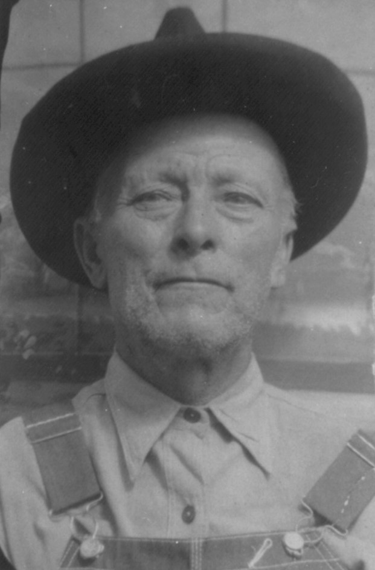

Daniel M. Mathis
Born 1873

Life Events
Born: December 13, 1873
Family
Father: Malachi M. Matthews
Mother: Mary Williams
Siblings
Spouse:
Children
Military Service
No military service information has been added.
Biography
Daniel M. Mathis was born on December 13, 1873, in Madison County, Florida, according to the birth date he provided on his World War I draft registration. He was the son of Malachi M. Matthews, also known as Mack Mathis, and Mary Williams. The family surname appears in historical records under several spellings, including Mathis, Matthews, and Mathews.
**Early Life in Madison County (1873–1898)**
Daniel grew up in rural Madison County, Florida, during the years following the Civil War. His father was a farmer, and the family lived in an agricultural community where farming provided a livelihood for many households.
The 1880 United States Census recorded Daniel, approximately eight years old, living with his parents and younger siblings Mary Jane and John. His father appeared in the census as Mack Mathis.
By the 1885 Florida State Census, the household had grown to include Daniel's younger siblings Annie and William. These early census records document Daniel's upbringing in Madison County and help establish the relationships among the children of Malachi Mathis and Mary Williams.
**Marriage and Family (1899–1910)**
On January 1, 1899, Daniel married Mary Frances Darling in Madison County, Florida. Their marriage license had been issued the previous day, December 31, 1898, and the ceremony was performed by O. F. Peck, a notary public. Mary Frances was the daughter of Everett Darling.
The couple established their home in Madison County, where Daniel worked as a farmer. The 1900 United States Census recorded Daniel and Mary with their infant son Claude, born in January of that year.
Over the following years, Daniel and Mary raised eight known children: Claude (1900–1940), Lela Mae (1902–1951), Rubin Ellis (1904–1981), Frank (1907–1969), Roy Eugene (1909–1974), Glover (1910–1973), Shirley Lee (1915–1949), and Jessie Mae (1917–1995).
In the 1910 census, the family was living in the Norton Creek area of Madison County. Their household included Claude, Lela, Rubin, Frank, and an infant son who has been identified through other family records as Roy Eugene Mathis.
**Moving to Lafayette County (1910–1920)**
Sometime between the 1910 census and September 1918, Daniel and his family relocated from Madison County to the Mayo area of Lafayette County, Florida.
On September 12, 1918, Daniel registered for the World War I draft in Lafayette County. He reported his birth date as December 13, 1873, identified himself as a farmer, and named Mary Mathis as his nearest relative. His registration described him as being of medium height and build, with blue eyes and dark hair. The registration documents his participation in the draft registration process but does not establish that he served in the military.
By the 1920 census, Daniel and Mary were living in Lafayette County with all eight of their known children. Their household also included their fifteen-year-old niece, Ella Truluck (1904–2000).
Ella was the daughter of Daniel's sister Annie E. Mathis and her husband, Silas P. Truluck. Her presence in the household provides another documented connection between the Mathis and Truluck families.
**Farming and Family Life in Mayo (1920–1940)**
Daniel continued farming in Lafayette County throughout the following decades.
The 1930 United States Census recorded the family in the Arline area of Lafayette County. Daniel and Mary were living with their children Claude, Roy, Shirley, and Jessie.
Also residing with them was Mary's father, Everett Darling, then approximately seventy-nine years old. The census explicitly identified Everett as Daniel's father-in-law, providing additional evidence of the relationship between the Darling and Mathis families.
Daniel was recorded as a farmer, while Claude and Roy also worked in agriculture. Their occupations reflect the family's continued dependence on farming in rural northern Florida.
The 1935 Florida State Census provides another glimpse of the extended Mathis household in Lafayette County. Daniel and his wife were living with their children Claude, Roy, Shirley, and Jessie, along with Mary's elderly father, Everett Darling. Also listed were Daniel and Mary's young grandchildren Joseph Henry and Honorine Virginia Mathis, children of their son Frank. Their presence demonstrates that multiple generations of the family continued to share a household during the 1930s.
By the 1940 census, Daniel and Mary were still living in Lafayette County. Their son Roy remained in the household, as did their daughter Jessie Mae and her husband, John Sapp.
The same census page also recorded Daniel and Mary's grandchildren Joseph Henry Mathis and Honorine Virginia Mathis, children of their son Frank Mathis. These records illustrate the continuing presence of several generations of the Mathis family in the Mayo area.
**Final Years and Death (1940–1946)**
Daniel spent his final years in the Mayo area, where he had lived for several decades.
He died at his home near Mayo, Lafayette County, Florida, on April 27, 1946, at the age of seventy-two. His Florida death certificate, state file number 8538, identified his occupation as farmer and recorded arteriosclerosis as the cause of death.
The certificate reported his birth as January 1873 in Madison County, although his World War I draft registration gave the more specific date of December 13, 1873. His parents' names were recorded as unknown on the death certificate, but earlier census records identify them as Malachi M. Mathis and Mary Williams.
Daniel was buried on April 28, 1946, at Airline Cemetery near Mayo, Florida.
**Family Legacy**
Daniel M. Mathis spent his life in northern Florida, first in Madison County and later in Lafayette County. His life was closely connected to farming, family, and the rural communities in which he lived.
Through his marriage to Mary Frances Darling and their eight children, Daniel became part of an extended family whose descendants included the Mathis, Singletary, Sapp, and other families of northern Florida.
His daughter Lela Mae Mathis married George W. Singletary, connecting the Mathis family to the Singletary branch of this family archive. Their son, Dewey Singletary (1919–1973), was one of Daniel's grandchildren.
The surviving census records, marriage certificate, draft registration, and death certificate provide a documented account of Daniel's life across more than seven decades, preserving the history of a family that remained closely connected to northern Florida for generations.
Photos
No additional photographs have been added.
Sources
-
1880 United States Census - Mack Mathis Household
Type: census1880 United States Census, Madison County, Florida, District 7, enumerated June 16, 1880, page 19, lines 22–26. The household lists Mack Mathis, age 34; his wife Mary, age 28; and their children Daniel, age 8, Mary Jane, age 7, and John, age 1. The family surname appears as Mathis, a spelling variation also found as Matthews in other family records.
-
1885 Florida State Census - Malachi Mathis Household
Type: census1885 Florida State Census, Madison County, Florida, page 6, enumerated June 21, 1885. The household includes Malachi Mathis, his wife Mary, and children including Daniel, John, Annie, and William. Annie was recorded as age two and William as five months old. The family's reported ages and names should be compared with other census records.
-
1899 Marriage Record — Daniel Mathis and Mary F. Darling
Type: MarriageMarriage record for Daniel Mathis and Miss Mary F. Darling. The marriage license was issued on December 31, 1898, by the Madison County Court, and the marriage was performed on January 1, 1899, by O. F. Peck, Notary Public.
Location: Madison County, Florida
Supports: Marriage of Daniel Mathis and Mary F. Darling on January 1, 1899, Marriage location in Madison County, Florida, Identification of Mary F. Darling as Daniel Mathis's wife
-
1900 U.S. Census — Daniel Mathis Family
Type: CensusThe 1900 United States Census records Daniel Mathis as head of household, living with his wife Mary and their infant son Claude in Madison County, Florida. Daniel's birth was recorded as December 1874, although his 1918 World War I draft registration gives December 13, 1873. Mary's birth was recorded as June 1879.
Location: Precinct 3, Madison County, Florida
Household Members:
- Daniel Mathis — Head, born December 1874, age 25
- Mary Mathis — Wife, born June 1879, age 20
- Claude Mathis — Son, born January 1900, age 4/12 (4 months)
Supports: Daniel Mathis's residence in Madison County, Florida, in 1900, Marriage of Daniel and Mary Mathis by 1900, Mary Mathis's reported birth month and year of June 1879, Claude Mathis as the son of Daniel and Mary, Daniel Mathis's reported birth month and year of December 1874
-
1910 U.S. Census — Daniel Mathis Family
Type: CensusThe 1910 United States Census records Daniel Mathis and his wife Mary living in the Norton Creek area of Madison County, Florida, with their children. Their daughter Lela was recorded as seven years old and born in Florida. Her age is consistent with her September 26, 1902, birth date.
Location: Norton Creek, Madison County, Florida, United States
Household Members:
- Daniel Mathis — Head, age 37 (handwriting unclear; possibly 27
- Mary Mathis — Wife, age 28
- Claude Mathis — Son, age 10
- Lela Mathis — Daughter, age 7
- Rubin Mathis — Son, age 5
- Frank Mathis — Son, age 3
- Unnamed — Infant son, age 5/12 (5 months
Supports: Daniel Mathis and Mary Frances Darling as Lela Mathis's parents, Lela Mathis's residence in Madison County, Florida, in 1910, Lela Mathis's age of seven in 1910, The Mathis family household in 1910
-
1918 World War I Draft Registration — Daniel M. Mathis
Type: MilitaryDaniel M. Mathis registered for the World War I draft on September 12, 1918, in Lafayette County, Florida. He reported his birth date as December 13, 1873, his occupation as farmer, and his nearest relative as Mary Mathis. His physical description recorded medium height, medium build, blue eyes, and dark hair. Draft registration does not establish military service.
Location: Mayo, Lafayette County, Florida
Supports: Daniel M. Mathis's reported birth date of December 13, 1873, Daniel's residence in Mayo, Lafayette County, Florida, in 1918, Daniel's occupation as a farmer, Identification of Mary Mathis as Daniel's nearest relative
-
1920 U.S. Federal Census — Daniel M. Mathis Family
Type: Census1920 United States Federal Census, Lafayette County, Florida, Precinct No. 3, sheet 7B, lines 86–96. The household includes Dan M. Mathis (47), wife Mary (37), and their eight children: Claude (19), Lela (17), Rube (15), Frank (13), Roy (11), Glover (10), Shirley (6), and Jessie M. (2). Also residing in the household was Ella Truluck (15), identified as a niece. Ella was the daughter of Silas P. Truluck and Annie E. Mathis, Daniel's sister and a daughter of Malachi M. Mathis and Mary Williams.
-
1930 U.S. Federal Census — Daniel M. Mathis Family
Type: census1930 United States Federal Census, Lafayette County, Florida, Election Precinct No. 3, Arline, Enumeration District 34-4, sheet 1A, lines 1–7, enumerated April 2, 1930. The household includes Daniel M. Mathis (56), wife Mary F. Mathis (46), sons Claude E. (29) and Roy E. (20), daughters Shirley L. (13) and Jessie M. (11), and Daniel's father-in-law Everett Darling (79). Everett's presence provides additional evidence that Mary Frances Mathis was his daughter. Daniel, Claude, and Roy were recorded as farm workers or farmers.
-
1935 Florida State Census — Daniel M. Mathis Family
Type: census1935 Florida State Census, Lafayette County, Precinct No. 2. The census lists D. M. Mathis (62), Emma F. Mathis (54), Claude Mathis (35), Roy Mathis (25), Shirley Mathis (19), Jessie Mathis (17), E. Darling (81), Joseph Mathis (5), and Honorine Mathis (2). E. Darling is identified as a boarder and is believed to be Everett Darling, father of Mary Frances Darling Mathis. Joseph Henry Mathis and Honorine Virginia Mathis were children of Daniel and Mary's son Frank Mathis. The name Emma F. Mathis should be compared with other records identifying Daniel's wife as Mary Frances Mathis.
-
1940 U.S. Federal Census — Daniel M. Mathis Family
Type: census1940 United States Federal Census, Lafayette County, Florida, Enumeration District 34-4, sheet 9A, enumerated April 17, 1940. Lines 30–34 record Daniel M. Mathis (65), his wife Mary Frances Darling Mathis (58), their son Roy Eugene Mathis (28), their son-in-law John Sapp (28), and their daughter Jessie Mae Mathis Sapp (22). Also appearing on the same census page are Joseph Henry Mathis (10) and Honorine Virginia Mathis (7), children of Daniel and Mary's son Frank Mathis.
-
1946 Florida Death Certificate — Daniel Mathis
Type: deathFlorida death certificate, state file number 8538, documenting the death of Daniel Mathis on April 27, 1946, at his home in Mayo, Lafayette County, Florida. The certificate records his age as 72, birth in January 1873 in Madison County, Florida, occupation as farmer, and marital status as married. His wife is identified as Mrs. Daniel Mathis. Both parents are recorded as unknown. The cause of death was arteriosclerosis, and he was buried at Airline Cemetery near Mayo on April 28, 1946.